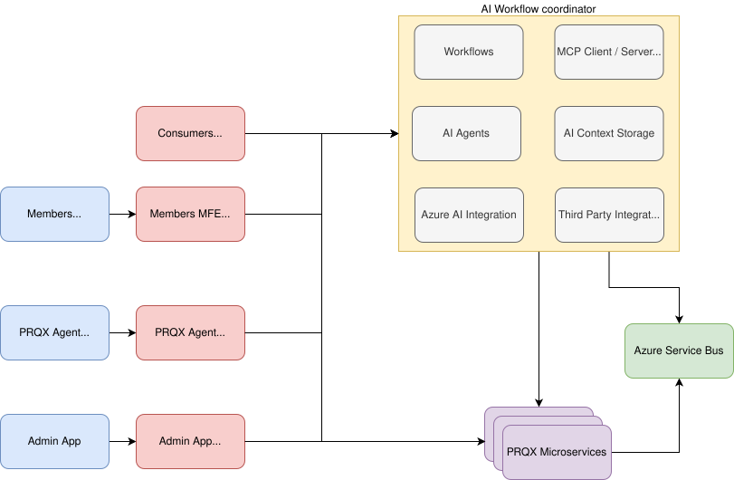
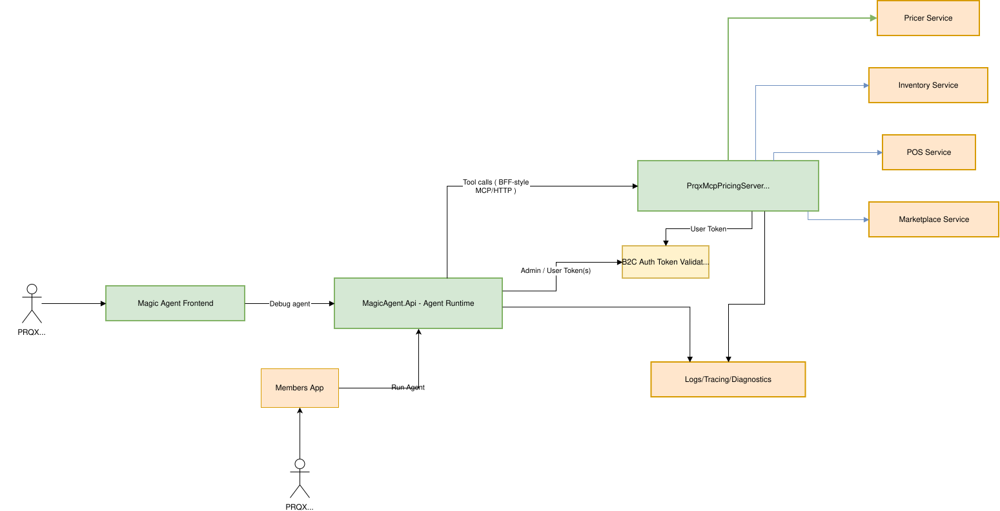
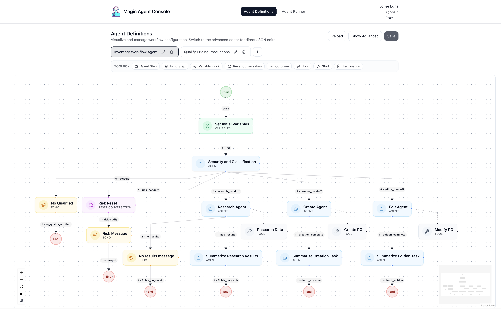
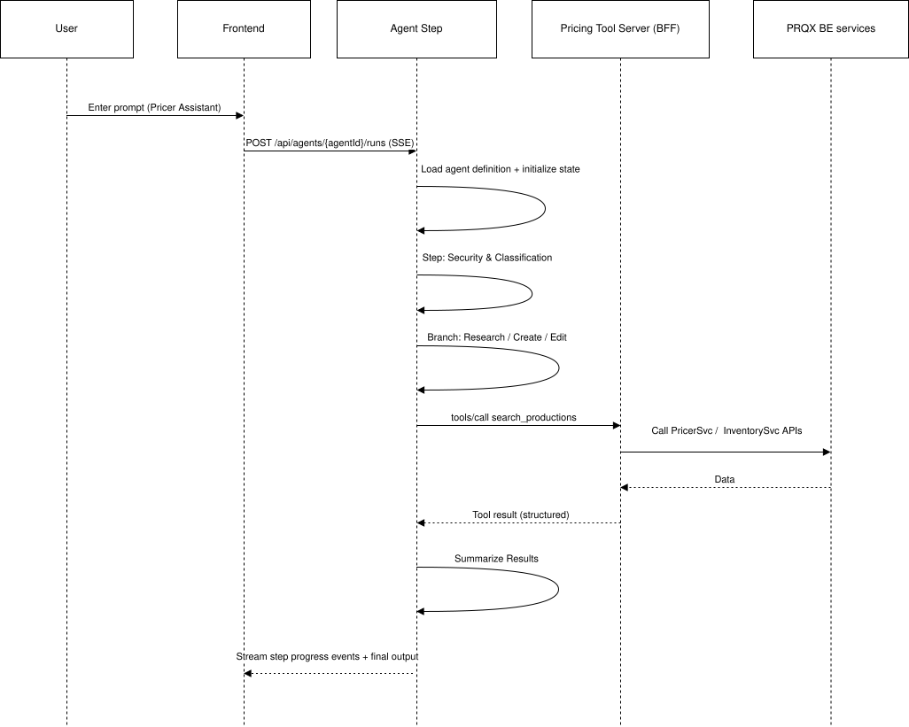

# PricerQX AI Strategy ## Review current development streams and future plans - **Pricing Indicators**: Review Cyann Spark project results and next steps - **Agentic Infrastructure**: PricerQX AI workflows - **Pricing Assistant**: Pricing-assisted operations <!-- NOTE: Recap how we got here, the previous attempts and the current direction and work streams. --> --- # Agenda - Review Cyann project and achievements (20 Mins) - Pricing Indicators – next steps - AI Platform & Infrastructure needs (20 Mins) - Agentic Approach (Why, What, How, When) - Pricing Assistant (Agentic application – small demo) (30 Mins) - Roadmap + Q&A (20 Mins) <!-- NOTE: Review the agenda and adjust at the stakeholders request. --> --- <!-- .slide: class="slide-sparse" data-deck-margin="0.01" --> # Cyann Development Stream - Pricing Indicators project - Business selected several production indicators that can help identify pricing urgency - Together with the Cyann team we developed a pipeline to gather the indicators - Working with the business, and at the Cyann team’s suggestion, we developed a formula to calculate the "urgency score" (HOT, COLD, NEUTRAL) - The Cyann team developed a dashboard and, taking advantage of AI LLMs, provided feedback on top of the "urgency score" <!-- NOTE: External team was larger than expected and most of the work was done in python which will require re-write to fit our .net stack. --> --- <!-- .slide: class="slide-sparse" data-deck-margin="0.01" --> # Achievements & Lessons Learned - Pricing Indicators project - Developed an initial mechanism to analyze production indicators - Validated the approach with business stakeholders - Identified gaps and areas for improvement in the analysis - Key areas where the approach fell short: - Evaluation of the indicators - Feedback loop - Use of AI to adapt the weights of the indicators <!-- NOTE: External team was larger than expected and most of the work was done in python which will require re-write to fit our .net stack. --> --- <!-- .slide: class="slide-sparse" data-deck-margin="0.01" --> # Conclusion and Next Steps - The concept is functional but requires further development to reach operational readiness - We still need to validate the ROI of this approach - The added value of the external team was not fully realized - Business can iterate on this approach to arrive at a functional solution that fits real user needs <!-- NOTE: External team was larger than expected and most of the work was done in python which will require re-write to fit our .net stack. --> --- <!-- .slide: class="slide-sparse" --> # Other Development Streams - Pricer Agentic Assistant - First phase of this development included Simion's FE-based agent using JavaScript - Another agent was developed using n8n workflows and an FE chat adapter with an MCP server written in Node - These agents demonstrated feasibility of the concept but were not reliable and had too many architectural gaps - The agentic approach is still a useful tool but needs an architecture that fits our current stack <!-- NOTE: Business framing: time-to-decision, consistency, onboarding. Tech framing: cross-service workflows are hard to standardize. --> --- <!-- .slide: class="slide-dense" --> # __Why__ “Agentic” AI ? - **LLM's Single Shot Limitations**: - Limited context window - No memory of previous interactions - No ability to reason about complex tasks - **Agent**: Multi-step coordination logic that allows the execution of complex tasks (steps, branching, state) - **Capabilities**: - Prompt engineering - Tool calling - Memory management <!-- NOTE: When we did our original PoC many of this elements were missing, specially guardrails, security and observability. --> --- <!-- .slide: class="slide-dense" --> # __What__ can we do with “Agentic” AI ? - Automate complex workflows - Improve decision-making processes - Use LLM as context provider for complex datasets - Provide explanations and briefs on pricing strategies - Generate pricing recommendations - Enhance user experience - Provide personalized recommendations - Allow user to customize its experience with natural language - Reduce manual effort - Complete multi-step tasks with single prompts <!-- NOTE: When we did our original PoC many of this elements were missing, specially guardrails, security and observability. --> --- <!-- .slide: class="slide-dense" --> # __How__ we can provide "Agentic AI" capabilities : “Agentic Architecture” - **Agent Workflow**: Multi-step coordinator logic that allows the execution of complex tasks (steps, branching, state) - **Agent**: Step in the workflow that invokes a model to perform a simple task (prompt, input, output, model, tools, memory) - **Models**: Business grade adapter to access external LLMs - **Tools**: Controlled capabilities that will allow agents to perform tasks (internal or external) - **Memory**: Persistent storage for agent state and context <!-- NOTE: When we did our original PoC many of this elements were missing, specially guardrails, security and observability. --> --- <!-- .slide: class="slide-dense" --> # __How__ to implement “Agentic Architecture” - **Infrastructure**: - execution - observability - guardrails - reuse across domains - security <!-- NOTE: When we did our original PoC many of this elements were missing, specially guardrails, security and observability. --> --- <!-- .slide: class="slide-sparse" --> # PRQX AI Enabler <p></p> <!-- NOTE: This is the architecture enabler proposed when we did our initial PoC --> --- <!-- .slide: class="slide-densest" --> # Architecture additions - **Azure AI Foundry and .NET Agent SDK** - guardrails - observability - security - **.NET Agent SDK** - Agent modeling - Agent execution - Logging, debugging, tracing - **.NET Agent workflow runner** - multi-threaded execution - hosted like any of our other microservices - secured using our auth policies + **.NET MCP Server** - works with the same patterns as our current BFFs - uses our auth policies - uses our common libraries for service access <!-- NOTE: Showcase the advantage of using a common infrastructure that fits our existing patterns. --> --- # Agentic Implementation - Phase 0 - **Magic Agent (Agent Service + UI)** - hosts agent definitions (workflows) - executes runs (state, branching) - streams step-by-step progress - provides diagnostics for audit/debug - **Pricing Tool MCP Server (BFF-style connector)** - exposes pricing/inventory capabilities as tools - normalizes DTOs, validation, errors - enforces auth boundaries <!-- NOTE: MCP is the connector shape; conceptually this is “Agent BFF” like our UI BFF pattern. --> --- # Component View <p></p> <!-- NOTE: Talk through responsibilities: UI is client; agent service orchestrates; tool server is boundary/normalization; services stay clean. --> --- <!-- .slide: class="slide-sparse" --> # Pricer Assistant **Goal:** turn broker intent into safe, controlled pricing actions. - Research inventory and context - Interpret marketplace signals - Create/Update/Delete **Pricing Groups** - Summarize outcomes and recommend next steps <!-- NOTE: Set expectations: we’re demonstrating a platform capability using pricing domain first. --> --- # Pricer Assistant - Workflow <p></p> <!-- NOTE: Explain how this workflow was designed to fulfill the intent. --> --- <!-- .slide: class="slide-dense" --> # Pricer Assistant — workflow design - **Set Initial Variables** - **Security and Classification** - allow only broker/pricing topics - route intent: - Research - Create pricing group - Edit/Delete pricing group - **Research Agent** (tools) - **Create Agent** (tools) - **Edit Agent** (tools) - Summarize outcomes + next steps <!-- NOTE: Emphasize that workflow is config-driven (agent definition file), not bespoke code. --> --- # Execution flow (sequence view) <p></p> <!-- NOTE: Highlight streaming progress: better UX and operational transparency. --> --- <!-- .slide: class="slide-sparse" --> # Runtime responsibilities - Execution model: steps, outcomes, state - Tool invocation: typed inputs/outputs, retries/timeouts (policy-driven) - Observability: - step timing - tool args/results - conversation diagnostics - UX: streaming progress updates to UI <!-- NOTE: For CTO/Architect: this is where standardization and reusability live. Remember possibilities for feedback loops, human-in-the-loop interactions, etc. --> --- <!-- .slide: class="slide-sparse" --> # Tool server responsibilities <br> (BFF pattern) - Translate agent intent → internal service calls - Enforce: - auth boundaries - parameter validation - DTO normalization - consistent error model - Keep microservices unchanged <!-- NOTE: This is the scaling pattern: domain teams can publish tool servers without coupling to the agent runtime. --> --- <!-- .slide: class="slide-sparse" --> # Demo : Pricer Assistant **Objective:** show research → controlled action → summary. - Choose agent: `pricing-assistant-agent` - Run prompt(s): - Research - Create/Update (if time) - Show: - step-by-step workflow panel - tool invocations - final summary and next steps <!-- NOTE: Keep demo short. The deck is the main deliverable. Use 1 workflow path if you’re time constrained. --> --- <!-- .slide: class="slide-sparse" --> # Demo : Pricer Assistant **PROMPTS SCRIPTS:** - How is my inventory for this weekend looking like? - Give me more details and advice on Shane Gillis (1/24) event - Let's create 3 groups in simulation mode. - Let's ensure the price of each ticket in the groups is not the same. increase each ticket by $1 in the group. - Let's remove all pricing groups for this event <!-- NOTE: Keep demo short. The deck is the main deliverable. Use 1 workflow path if you’re time constrained. --> --- <!-- .slide: class="slide-dense" --> # Next Phase - Pricing Assistant - UI integrations - Chat interface - Pre-cooked prompts - UI guidance - Marketplace signals / interpretation - Personalized memories - Outcomes: - faster research - opens the door to other user actions not supported by the UI - allows users customized interactions and presets <!-- NOTE: Discuss possibilities to instrumentalize and productize the agentic service in pricing. --> --- <!-- .slide: class="slide-dense" --> # Production viability ## (governance & safety) - **Guardrails**: using Azure AI Foundry policies we can enforce: - Content safety - Model selection - Output safety - **Security**: tool-level authorization (least privilege) - **Auditability**: who ran what, which tools, what inputs/outputs - **Reliability**: timeouts, retries, circuit breakers (tool layer) - **Cost controls**: quotas/budgets per tool/run/user <!-- NOTE: Business reassurance: controlled automation; technical reassurance: operable systems. --> --- <!-- .slide: class="slide-sparse" --> # Future expansions - Extend tool servers to: - Purchases - Orders - Distribution - Add capabilities: - long-running workflows - human-in-the-loop approvals - event-driven runs (signal triggers) <!-- NOTE: Same runtime + governance; new domain connectors. This is microservices-aligned scaling. --> --- <!-- .slide: class="slide-sparse" --> # Platform evolution - Simplify the UI through targeted human-agent interactions - Domain teams publish tool servers (BFF-style) - Enhance user experience with less cluttered UIs and richer responses to user data requests - Mobile, voice, SMS, and other channels to communicate with the system - Add human intelligence stored in system memories to perform tailored broker tasks <!-- NOTE: This answers “how does it evolve into microservices architecture?” with ownership + standards. --> --- <!-- .slide: class="slide-sparse" --> # Questions? <!-- NOTE: Close with clear decisions. -->